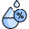

Monitoramento do solo vivo
Este site permite acompanhar as condições do solo e do ambiente por meio dos dados coletados
pelos sensores, como umidade, temperatura e luminosidade. Além disso, apresenta a leitura mais
recente, ajudando o agricultor a entender melhor as necessidades da plantação e a controlar a irrigação.
Aguardando dados do ESP32...

Temperatura

Umidade do ar
--
%
Umidade do solo
--
ADC
Leitura bruta do sensor (0 a 4095). Calibração necessária para converter em %.
Luminosidade
--
ADC
Leitura analógica (0 a 4095). É necessário calibrar para estimar lux.
Estado da válvula
Não configurada
O ESP32 ainda não envia o estado da válvula.
Alerta de chama
Aguardando dados...
Os valores são atualizados automaticamente. As leituras analógicas precisam ser calibradas
antes de serem apresentadas como porcentagem ou unidades físicas.